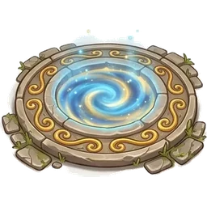
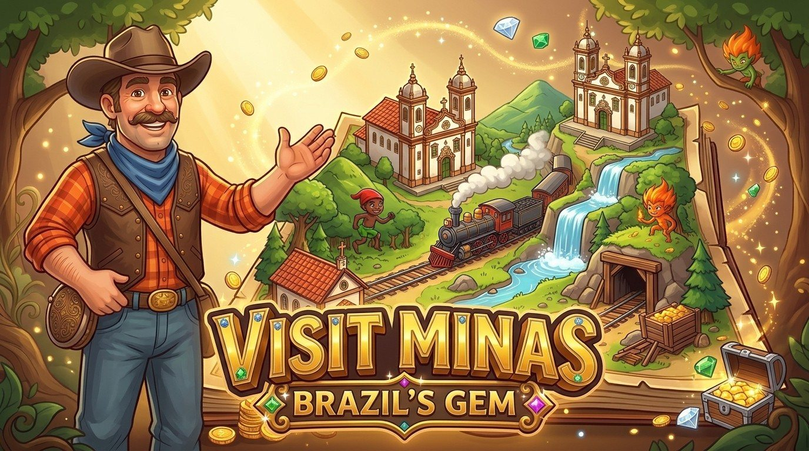
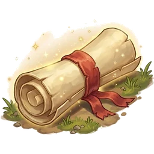
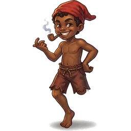
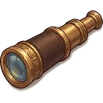
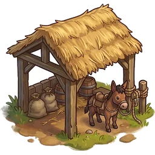
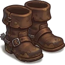
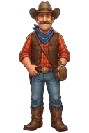
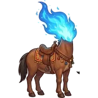
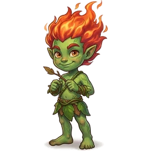

EXPLORE
11 portais no tempo: do pau-brasil de 1500 à Tiradentes de hoje, passando por engenhos, Palmares, o ouro e a Inconfidência.
— STAGE 1 · TELA DE ABERTURA —

300 ANOS DE HISTÓRIA DO BRASIL. UM CAUBÓI PERDIDO NO TEMPO. E O OURO DE MINAS GERAIS.
INSERT COIN... NÃO PRECISA. É GRÁTIS.
— STAGE 2 —

11 portais no tempo: do pau-brasil de 1500 à Tiradentes de hoje, passando por engenhos, Palmares, o ouro e a Inconfidência.

78 relatórios com fatos de verdade, perguntas que valem ouro e o "isso viria a ser": o que cada história virou no Brasil de hoje.

11 desafios de fliperama: o Frogger do pau-brasil, o Space Invaders do engenho, o Pac-Man do garimpo... e o Saci aprontando no caminho.

EM BREVEAchou um lugar que vale a visita? Anote no caderno de viagem e leve para a viagem de verdade: endereço, dica do guia e rota.

EM BREVECity tour com guia, pousadas, restaurantes e passeios, direto de dentro do jogo. O mesmo mapa, agora com reserva.

Junte ouro e brilho, compre as botas de tropeiro, monte coleções e complete o bestiário do folclore. Brilho não se compra: se conquista.
Minas Gerais: um dos estados mais seguros, encantadores e gostosos do Brasil. Em todos os sentidos. Pão de queijo incluso.
— STAGE 3 · FINAL —



Nashville, 1876. Buck Calhoun, vaqueiro do Tennessee, chega a Tiradentes com sede. Bebe água do Chafariz de São José. O céu gira. O cantil gela. E Buck fica preso no tempo.
Ao lado dele, a Dona Mula (sem cabeça, com muita opinião) e uma missão estranha: atravessar 300 anos de Brasil, juntar relatórios e descobrir por que o ouro brilha tanto, e para quem.
No caminho: caravelas, quilombos, bandeirantes, inconfidentes e o temido Cobrador do Quinto, que quer 20% de tudo que você achar. Até hoje.
No fim, Minas Gerais de verdade espera por você. Com mapa, com história e com pão de queijo.
CONTINUE? 9